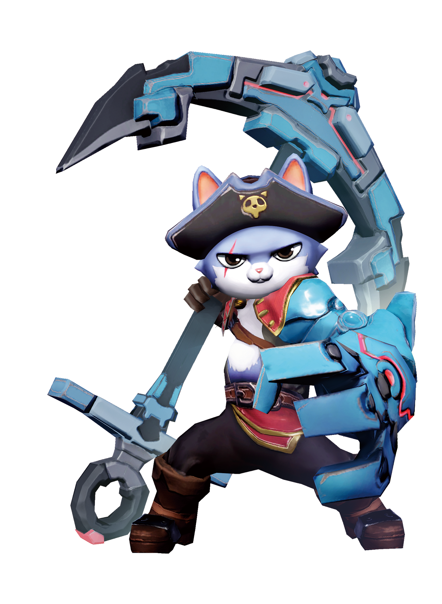
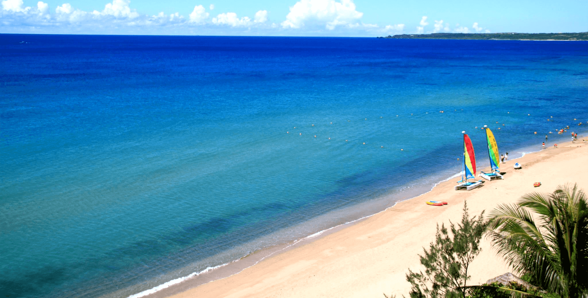

OUT OF
OFFICE☀
OFFICE☀
CAPTAIN FURY隊友們，休假副本開啟！

✦◆ QUANTAAR · 怒貓船長陪你啟程
南瓜虛擬科技股份有限公司 · 公司員工旅遊邀請SCROLL TO EXPLORE ↓
01 / YOU ARE INVITED
平常一起做遊戲，
這次一起好好玩。
親愛的南瓜夥伴：
謝謝你，把每一份創意、每一次挑戰，都變成我們共同的作品。這一次，讓螢幕裡的冒險暫時存檔，把主角的位置留給自己。
11 月 12 日至 13 日，邀請你和隊友一起出發墾丁夏都。在海風裡放空、在活動裡大笑，也留一點什麼都不做的時間。
這趟旅程的唯一主線：一起收集快樂。
CHOOSE YOUR HOLIDAY MODE
你想怎麼玩？
每一種玩法，都有你的位置。
選一個今天的自己，裝備你的休假模式。
個人互動選擇，不代表報名。飯店下午活動自由參加。
02 / THE ADVENTURE PLAN
兩天一夜，動靜都剛好。
☾ 如果晚上加開團體活動？
備案為取消第一天 11:30 越野，增加飯店停留時間；待主辦單位決定後更新。目前仍以越野＋19:00 自由活動呈現。
☀ 第二天午餐尚待補上
原稿未列午餐。農場、卡丁車與午餐時段需一起確認；14:30 下午茶不視為已安排午餐。各段車程待店家定案後核對。
03 / EXPLORE THE MAP
下一站，快樂。
真實風景，先幫你預載。
待確認的景點先以實景參考，定案後更新。

夏都官方海灘實景DAY 1 · 14:30
本次住宿地點把海景，設成待機畫面。
海風、沙灘與自由時間。想玩就玩，想慢下來也很好。14:30 抵達寄放行李，15:00 起依飯店安排入住。
查看景點與照片來源 ↗⌖ 夏都：屏東縣恆春鎮墾丁路 451 號BONUS LEVEL / 休假通行證
耍費，也能
解鎖成就。
打開邀請函、選擇休假模式、掌握集合時間。
再點亮 5 顆南瓜，領取你的限定稱號。
✥ 南瓜補給站 0 / 5
點一點，讓快樂充電。
✧
YOUR HOLIDAY ACHIEVEMENT
集滿印章與南瓜，解鎖稱號
04 / READY TO GO
行前背包，輕鬆打包。
勾選狀態保存在這個瀏覽器；依自身需求增減用品。
出發前，記得看這裡
集合與交通
11/12 09:00 左營出發；集合出口、上車位置、報到時間與聯絡人待公告。11/13 預計 18:00 抵達左營，依路況調整。
天候改變，照樣放鬆
戶外項目依天候與業者公告調整，可改以室內休閒為方向；替代安排尚未定案。
主辦單位待確認事項
集合地點、聯絡窗口、越野／農場／卡丁車／餐廳及地址、第二天午餐、特殊餐食需求、房務、活動費用與保險、晚間備案、各段車程與遊覽車停靠位置。